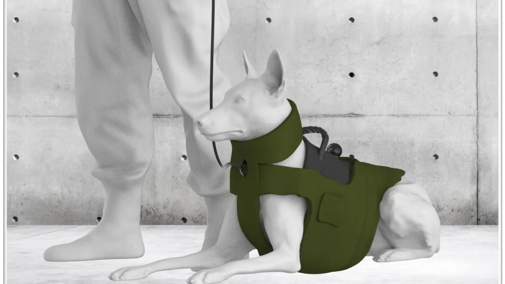
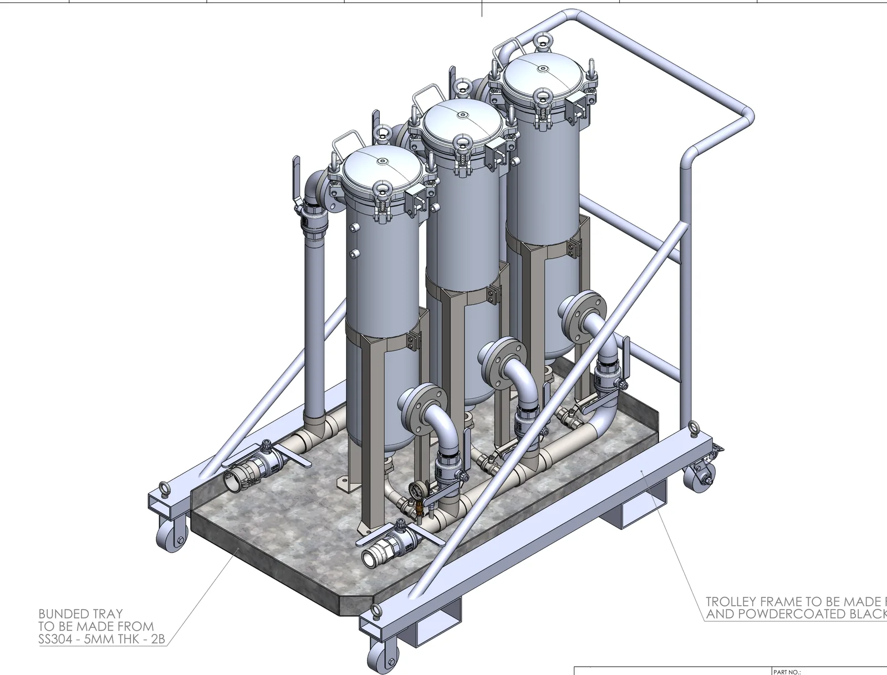
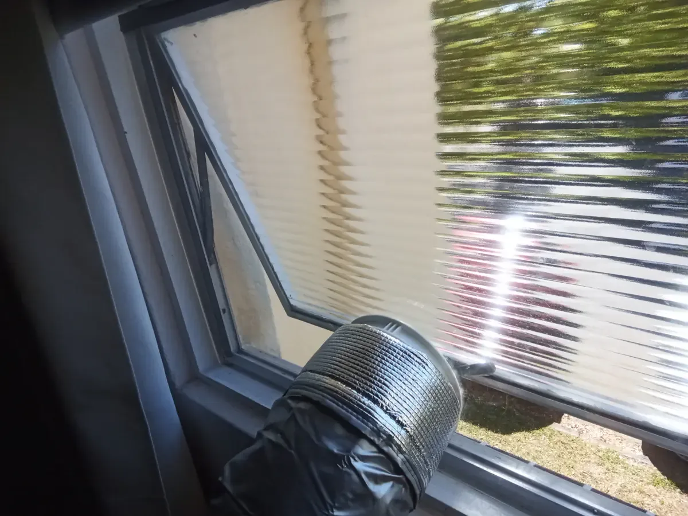
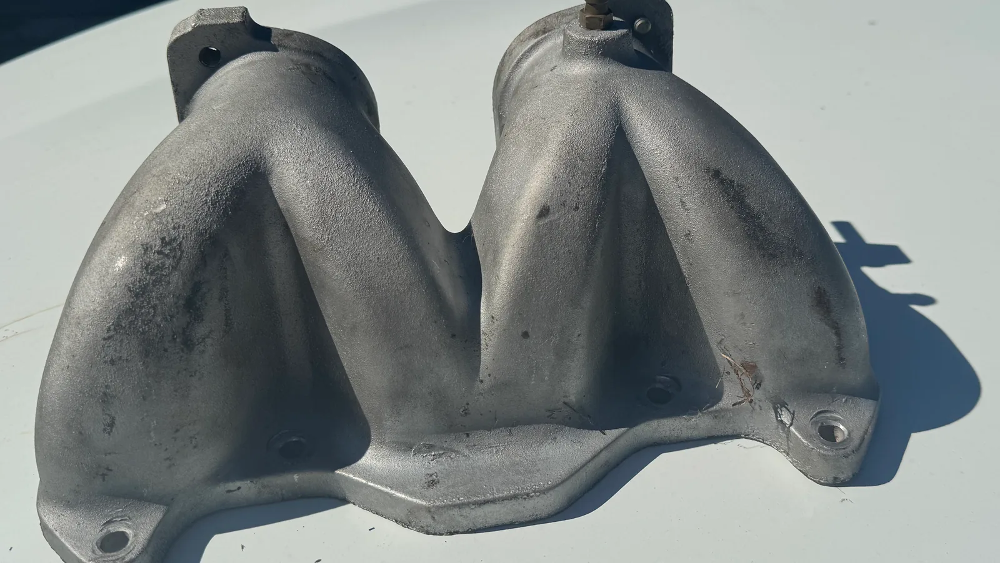
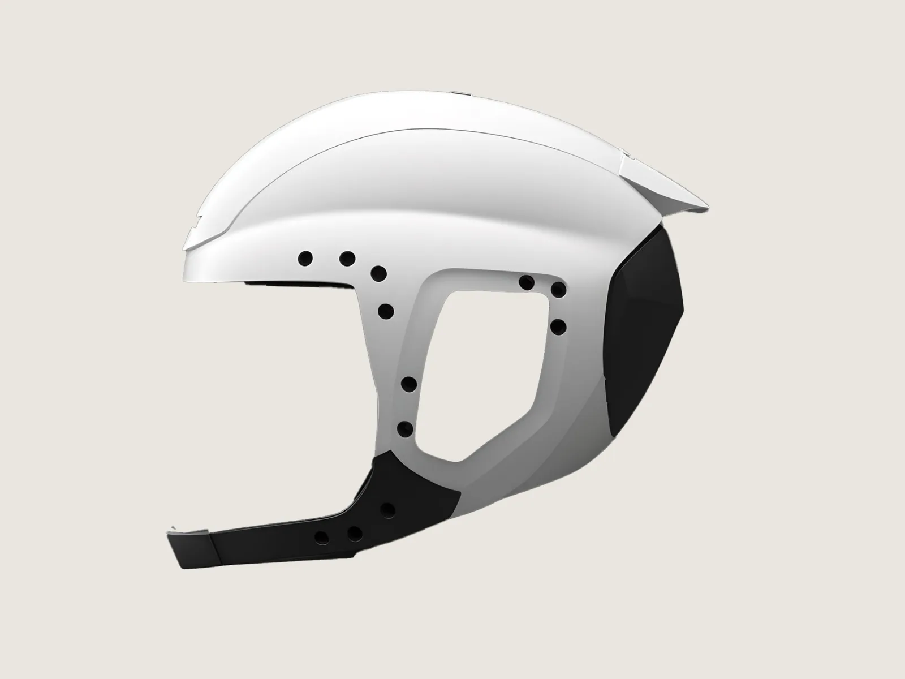
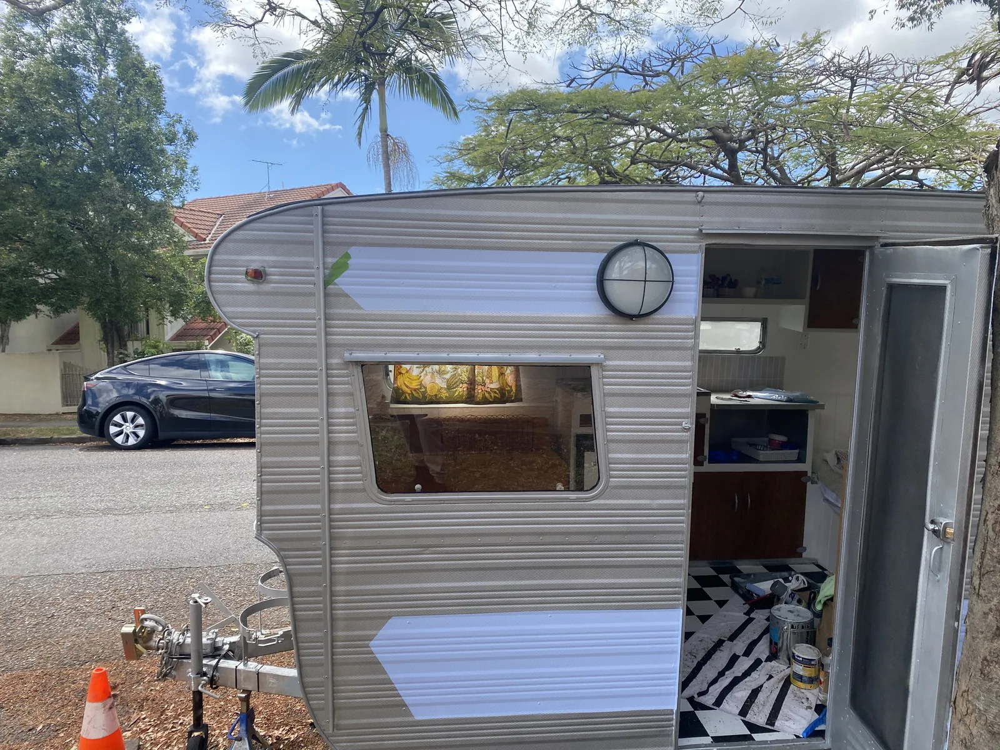

CAD and drawings for things that get made.
I'm Zac Cooper, a mechanical draftsman and industrial designer in Brisbane. By day I draw industrial equipment for manufacture in SolidWorks. After hours I take on freelance design, drafting and reverse engineering. Send me a sketch, a photo, an old drawing or the part itself, and I'll hand back files a workshop can build from.
What I do
Four kinds of work, one person from first sketch to final file. Pick the closest match to see examples.

Product & industrial design
From a first sketch to a model you can manufacture, with renders to pitch or sell it.
6 examples
Drafting & CAD
SolidWorks models, AS 1100 drawing packs, sheet metal flat patterns, or extra drafting hands for your team.
4 examples
Fabrication, laser & fit-outs
Laser and CNC-ready DXF files, plus small parts I cut, print and fit myself around Brisbane.
3 examples
Reverse engineering & scanning
Old, broken or discontinued parts scanned or measured, then rebuilt as clean CAD.
3 examplesExperience
Industry drafting, product design and manufacturing, in that order of how often I do them.
Tools I use
- SolidWorks
- AutoCAD
- Fusion 360
- KeyShot
- Meshmixer
- SolidWorks Flow Simulation
- MATLAB
- Python
- 3D scanner
- Large-format 3D printer
- CO2 laser cutter
- 2026 to nowFreelance CAD designerSelf-employed, BrisbaneDrawings, CAD, laser files and reverse engineering for private clients and local businesses, including 3D models of five regional Queensland venues for an AV company.
- Jul 2025 to nowMechanical DraftsmanGO Industrial, Deception BaySolidWorks models, AS 1100 fabrication drawings, sheet metal flat patterns and P&IDs for fuel storage and dispensing equipment.
- May to Jul 2025CAD DesignerTritium, BrisbaneDrawings and models for DC fast chargers, released for injection moulding, die casting and sheet metal.
- Mar to Apr 2025Design InternIngeniería Prosix, San Sebastián, SpainCAD, rapid prototyping and composite mould design for satellite and antenna components.
- 2021 to 2027Bachelor of Design (Industrial Design) / Bachelor of Engineering (Honours), MechanicalQueensland University of TechnologyDual degree, finishing 2027.
Recent projects
RX7 rotary intake manifold
A one-off intake manifold with a lost mould, captured and rebuilt as a clean CAD model.
Freelance job · 2025Rapimod K9 harness
A modular protective harness for police and military dogs, designed from handler research.
University capstone · 2024Air-con window panel
A clear acrylic panel that seals an awning window around a portable air-con hose.
Client job · 2026Hi-flow filter trolley
A bunded trolley that makes a three-vessel filter set mobile, issued for construction as a drawing pack.
Day job, shown with permission · 2025
Product designModufit Light helmet
An open-face helmet for city riders, with clip-on attachments and padding fitted from a head scan.
University project · 2023
FabricationCaravan window replacement
A cracked caravan window replaced with a new acrylic pane, cut to the frame and sealed in.
Client job · 2026What clients say
amazing work plenty of communication
Super responsive and great at what he does
Outstanding young guy with the right approach, good interpersonal skills and technical knowledge. Would recommend.
Zac did an awesome job! He came over the very next day to measure the window and made great suggestions that have made the final product much better than I imagined, such as a correctly sized rubber seal that holds it onto the window frame (instead of my elegant duct tape idea) and laser cutting around the "through the wall" attachment from the window kit so the exhaust hose clicks in perfectly and stays in place. Highly recommend him!
Thanks for all your help. Friendly and professional. Highly recommend :)
Got a sketch, a part or a drawing to sort out?
Send it over with a few photos or sizes. I'll tell you what's possible and what it will cost.